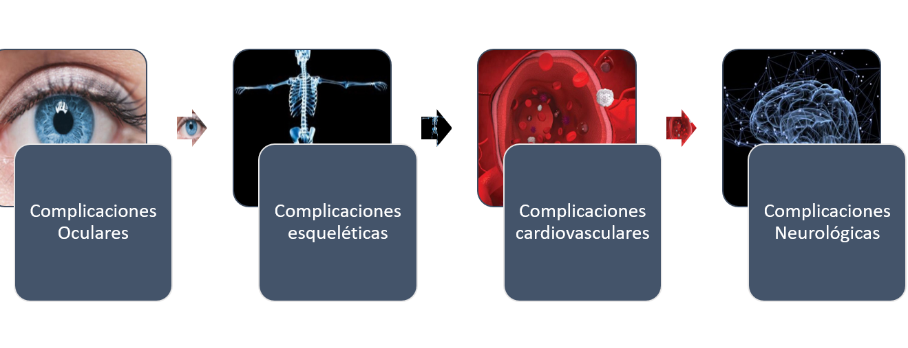

Existen múltiples formas de homocistinuria, que se distinguen por sus signos y síntomas, así como por su causa genética.
La forma más frecuente de homocistinuria se caracteriza por presentar miopía, dislocación del cristalino, un mayor riesgo de coágulos sanguíneos anormales y, osteoporosis u otras anomalías esqueléticas. Algunos individuos afectados también tienen retraso en el desarrollo y problemas de aprendizaje.
Las formas menos frecuentes de homocistinuria pueden provocar discapacidad intelectual, retraso del crecimiento, convulsiones, problemas con el movimiento y anemia megaloblástica.
En general, los signos y síntomas de la enfermedad se desarrollan en el primer año de vida, aunque algunas personas con una forma leve de la enfermedad pueden no manifestar signos o síntomas hasta más tarde en la infancia o en la edad adulta.
Este proceso es debido a mutaciones en los genes CβS (cistationinba-beta-sintasa), MTHFR (Metilentetrahidrofolato-reductasa), defectos de la cobalamina (Cbl).
La homocistina que no se convierte en cisteína se caracteriza por la formación de coágulos en las venas, debilidad ósea y anomalías esqueléticas y del cristalino.
